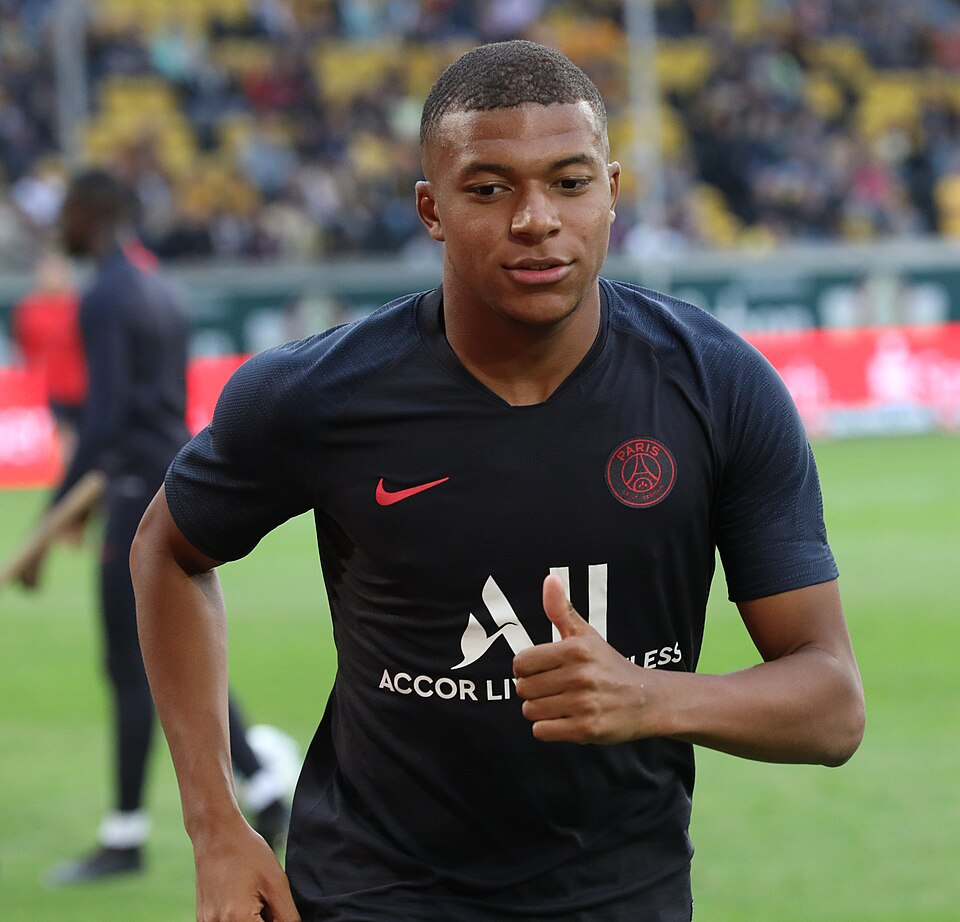
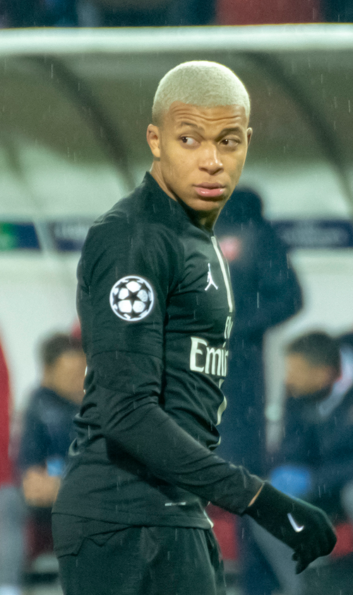
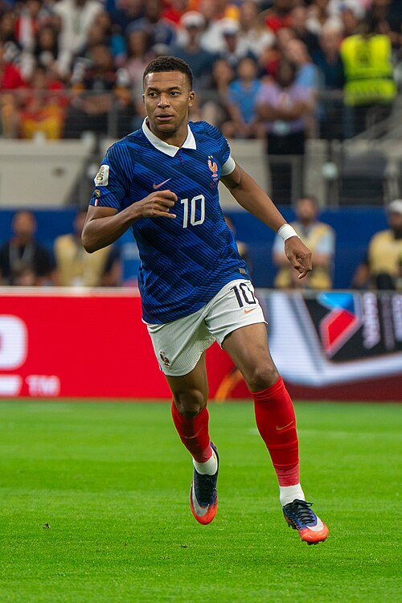

Kylian Mbappé
Kylian Mbappé Lottin est un footballeur français né le 20 décembre 1998 à Paris. Il a grandi à Bondy, en banlieue parisienne.

Sa carrière en club
Les clubs
- AS Monaco (2015-2017)
- Paris Saint-Germain (2017-2024)
- Real Madrid (depuis 2024)

Les moments forts de sa carrière
Biographie
- Champion du monde en 2018
- Finaliste de la Coupe du monde 2022, avec un triplé en finale
- Meilleur buteur de la Coupe du monde 2022
- Meilleur buteur de Ligue 1 2019 (33 buts), 2020 (18), 2021 (27), 2022 (28), 2023 (29) et 2024 (27).
- Meilleur passeur de Ligue 1 2022 (17 passes).
- Meilleur buteur du championnat d'Espagne 2025 (31 buts) et 2026 (25).
- Soulier d'or (10 buts) et Ballon de bronze de la Coupe du monde 2026, meilleur buteur de l’histoire des Mondiaux (22 buts).
- Finaliste, Soulier d'or (8 buts) et Ballon d'argent de la Coupe du monde 2022
- Troisième de la Ligue des Nations de l'UEFA 2025.
- Meilleur buteur (2) et passeur (2) de la Ligue des Nations de l'UEFA 2021
- Trophée Gerd-Müller 2024 (meilleur buteur de l'année, 52 buts)
- Meilleur buteur de la Ligue des champions 2026 (15 buts)
Malheureusement 0 LDC 0 Ballon d'Or qu'il aurait emmplement mérité pour moi

Engagements hors du terrain
Fondation "Inspired by KM"
Kylian Mbappé est aussi connu pour ses engagements hors du terrain. Il a créé la fondation "Inspired by KM" pour aider les jeunes défavorisés à travers le sport et l'éducation.
Pourquoi Kylian Mbappé ?
J'ai choisi de consacrer cette page à Kylian Mbappé car c'est un joueur qui m'inspire depuis mon plus jeune âge. C'est bien plus que mon joueur préféré : il représente la réussite par le travail, la persévérance et le talent à l'état pur. Mais au-delà de ses exploits sportifs sur le terrain — que ce soit ses buts décisifs, sa vitesse fulgurante ou son rôle de leader en Équipe de France —, c'est le personnage en lui-même. Malgré son immense notoriété mondiale, Kylian Mbappé reste quelqu'un d'humble qui n'oublie jamais d'où il vient et ce modele de motivation malgré les diffiultés
«Je serai toujours reconnaissant envers ma ville. Bondy, c'est mes racines, c'est là où tout a commencé.»
— Kylian Mbappé
«Il faut toujours croire en ses rêves. Si vous n'y croyez pas vous-même, personne ne le fera à votre place.»
— Kylian Mbappé